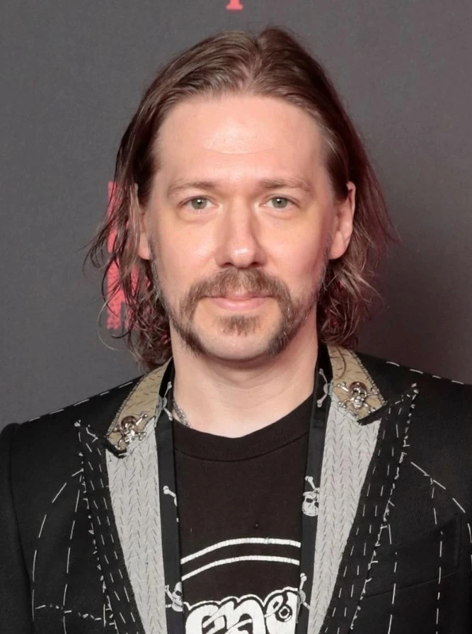

Tobias Forge (nacido el 3 de marzo de 1981) es el miembro fundador de Ghost , además de ser el vocalista principal y líder actual de la banda.
Durante los primeros 6 años de la carrera de Ghost, Forge, al igual que el resto de la banda, mantuvo su identidad en secreto, pero fue rápidamente revelada a raíz de una demanda interpuesta en 2016 por sus excompañeros. Desde entonces, ha sido más público y abierto sobre su trabajo en la banda, pero aún conserva una actitud bastante reservada. Forge está casado y es padre de mellizos, un hijo llamado Morris y una hija llamada Minou, nacida en 2008. Infancia Adolescencia Adultez